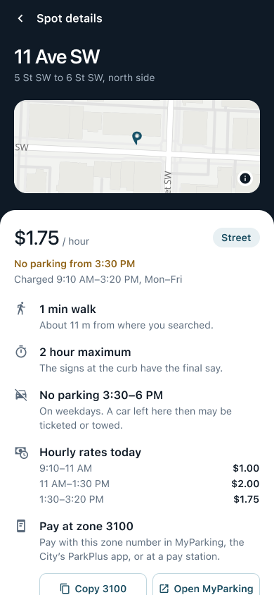
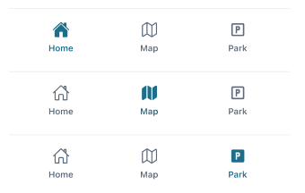
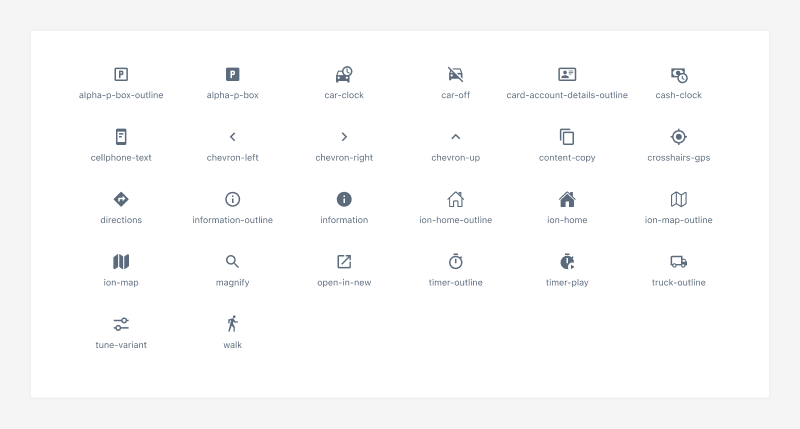

Case study · Mobile app
ParkAid
Street parking in downtown Calgary, with the City’s real rates, time limits and rush-hour rules.


Street parking in downtown Calgary, with the City’s real rates, time limits and rush-hour rules.
Calgary publishes each block’s zone, rates by time of day and rush-hour rules as open data. The capstone version guessed prices from zone codes, showed raw City addresses and listed the same block several times.
Rebuilt the data path and the interface around four questions: can I park here now, what does it cost right now, until when, and which zone do I pay? Then three rounds of critique, each followed by small, tested fixes.
Rates and rush-hour rules come straight from the City’s data. A busy downtown map reads at a glance. Payment is plain: ParkAid keeps time, and MyParking, the City’s app, takes the money.
of downtown street rows were repeats of the same stretch (277 of 1,178). Each now comes back once.
pins on the opening map view. 44 overlapped before; 4 touch now.
automated tests passing: 152 in the app, 18 in the backend.
contrast ratio for grey text on a selected row, now above the 4.5 : 1 AA minimum.
Downtown parking changes by block, by side of the street and by the hour. Before leaving the car, a driver needs four answers:
The City publishes all of this as open data. The capstone code, as of October 2025:

Capstone code, October 2025, run with the City’s current records. Its pricing logic was re-created from the old backend.
We built the base app together: an Expo app with a home list, a map and a parking session, a Node and Express API, and an import of the City’s parking data.
This repo starts from that finished code (first commit September 29, 2025), so the team’s own commit history isn’t in it.
commits were written by Claude Code, an AI coding agent, from March 2026 on, working from my instructions.
commits are under my own accounts. A few came from an OpenAI Codex branch merged in April 2026.
I set the priorities and made the product calls: what to fix, in what order, and what the app should promise.
Team of five builds the app, API and data import.
The finished capstone code moves to this repo.
New interface; backend live on Render; renamed ParkAid.
Three critique rounds. The last one became ten fix steps.
Real-data recordings, the Figma file and this case study.
The web build with the City’s records for the blocks around 11 Ave SW and 5 St SW, at a fixed time (a Tuesday, 1:40 PM). Screenshot every screen.
Usability heuristics, wording, and accessibility: contrast, keyboard order, screen-reader labels, small and wide screens.
My call for the last round: money facts first (rates, rush hour, cost), load the City’s real rates, and fix the backend too.
Each fix in its own commit, with Jest tests, the web build checked at 360, 390 and 1280 px, and an Android bundle build.
The critiques were AI-assisted reviews of the running build, not sessions with drivers.
Home. Raw addresses and FREE on charged blocks became block, side and zone in plain words, the rate now, and the rush-hour warning in amber.

Map. A static image on the web build with pins that show no price became a real map, with overlapping pins grouped by count and lowest rate.


Park. A demo where you chose the hourly rate became the City’s rate, the end time and the cost before you start, and a pointer to pay in ParkPlus.
Before: the capstone code from October 2025, run locally. After: the current web build. Both use the City’s records for the same downtown blocks.
One price is wrong for most of the day. On 11 Ave SW the rate is $1.00 until 11 AM, $2.00 until 1:30 PM, then $1.75.
A car left in a tow-away window gets ticketed or towed. So the list warns, lengths stop before the window, and Start isn’t offered during it.
ParkAid doesn’t take payment. It times the stay, shows the cost, copies the zone, opens MyParking, and reminds you to end that session too.
“5–6 St, north side · Zone 3100” matches what a driver sees at the curb. Two zones on one block are told apart by side.
Downtown, 45 blocks fit within 250 m. One pin shows the count and the lowest rate; a tap zooms in until the spots part.

Opening view. A group shows its count and its lowest rate.

After a tap on a group. The map zooms until the spots part; the chosen pin turns dark.

Filters. Best value, street only, within 500 m.
Near me ranks by walk, then price. Best value ranks by the rate now, then distance. In both, short stays, blocks with no parking right now, and permit-only blocks go lower.
Parking type (street, lot, parkade, permit) and distance (150 m to 1 km). The list and the map share the same filters.
Search an address, drop a pin, or drag the map and search that area.
Pins closer than a group pill (70 × 34 px at the current zoom) share one pin, led by the best-ranked spot. If every spot in a group is within 12 m, a tap selects the lead instead of zooming.
Parking zones, rates by time of day, restrictions
Four datasets into one table; safe to re-run
Nearby search runs in the database, with an index
Merges a block’s segments, formats rows
react-native-maps (Google)
react-native-web, MapLibre GL JS, OpenStreetMap tiles
Expo SDK 54 · React Native 0.81 · React Navigation · react-native-maps · MapLibre GL JS · Jest
// mobile/src/utils/mapGroups.js (simplified) export function groupPins(spots, worldSize) { const groups = []; for (const spot of spots) { // best first const { x, y } = worldPoint( getCoordinates(spot), worldSize); const near = groups.find((g) => Math.abs(g.x - x) < PIN_WIDTH && Math.abs(g.y - y) < PIN_HEIGHT); if (near) near.spots.push(spot); else groups.push( { x, y, lead: spot, spots: [spot] }); } return groups; }
The same grouping runs on both map engines. Pin positions come from Web Mercator, so only the screen distance between pins matters.
Read the City’s zone-rate layer, turn its rate bands into time ranges, and count only the hours the City charges.
Rows show the rate now, Details lists the day’s rates, and Park shows the cost before you start.
Check each restriction’s days and hours against the current time and against the end of a planned stay.
Amber warnings, capped lengths (“the longest here is 1 hour 50 min”), and no Start during the window.
The City splits a stretch of a block into segments. The API merges rows with the same zone, address, side, type, hours, limit and restriction.
277 of 1,178 street rows near downtown were repeats. Each block now comes back once, pinned at its midpoint.
Group pins by their distance on screen at the current zoom, on both map engines, and zoom in on tap.
45 pins with 44 overlapping became 15 pins with 4 touching on the opening web view.
react-native-maps on Android draws a custom marker into a 100 × 100 px bitmap, which crops a price pill. Android gets a compact round badge instead.
No cropped pins. The selected spot’s price shows in the sheet below the map.
| Check | How | Result |
|---|---|---|
| Logic | Jest unit tests: rates, rush hour, ranking, grouping and wording in the app; row merging, geometry and zone rates in the backend | 152 app and 18 backend tests pass (run November 2, 2026) |
| Real data | 1,672 City records within 1.5 km of 11 Ave SW and 5 St SW, served through the backend’s own row code | Used for every screen and recording here |
| Map density | Count pins and overlaps on the opening web view | 45 → 15 pins; 44 overlapping → 4 touching |
| Contrast | WCAG ratios for text on selected rows | Grey 4.23 → 4.74 : 1; amber warning 4.63 : 1 |
| Keyboard | Tab through the web map screen | Pins skipped (the list has the same places); search is the first stop |
| Small phone | Web build at 360 × 640 | Add time and End session moved from 676 and 771 px (off screen) to 263 and 358 px |
| Builds | Web build checked at 360, 390 and 1280 px wide; Android bundle exported | Both build without errors |
3 · Details. Rate now, rush hour, the day’s rates, the zone to pay.

4 · Parking. Time left, add time, end, and where to pay.

5 · Rush hour. At 2:40 PM the longest stay is 50 min.

6 · Parked here. Details shows the time left on your own spot.

7 · Laptop. The map opens with its list beside it.
1 · Finding parking and 2 · The map are on page 8.
Recorded with Playwright from the web build, at a fixed time, with the City’s records. A blue circle marks each tap. MP4 and GIF:
Made in November 2026 from the code, after the app was built, so the design can be inspected and reused. It isn’t the original design source.

Home, built from component instances: search, chips, spot rows, tab bar.

Details, with the map preview from OpenStreetMap tiles.

Tab bar, one variant per active tab.

Icons, with colour bound to a variable.
Claude Code wrote most of the code from March 2026 (101 of 128 commits), and helped make the walkthrough recordings, the Figma file and the first draft of this case study. An early branch came from OpenAI Codex (April 2026).
I directed the work: what to fix, in what order, and what the app should promise drivers.